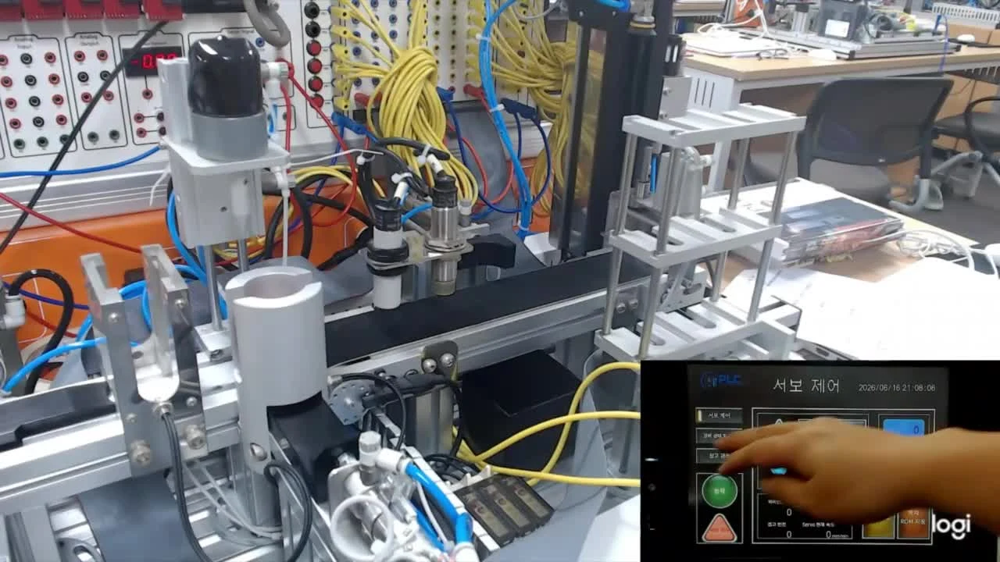
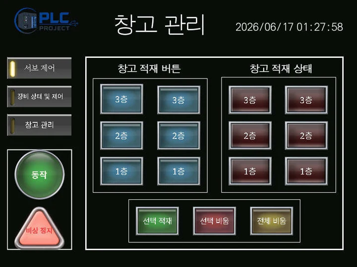
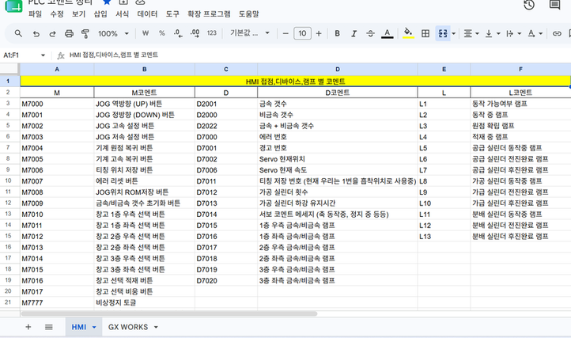
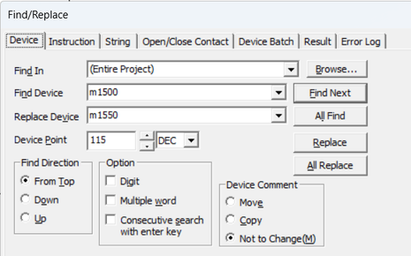

PLC 자동 적재 · 시퀀스 통합과 주소 조율
소재별 적재·출고 팀 미니 프로젝트에서, 공유 주소와 시퀀스 간 의존성을 맞추는 협업을 경험했습니다.
전체 시스템
금속·비금속 소재를 구분해 빈 위치에 적재하고, 같은 소재 3개가 모이면 저장된 위치에 따라 배출하는 팀 공동 구현입니다.


나의 협업 경험 · 공통 주소 기준 맞추기
팀 코드 병합에서 주소 중복과 SET/RESET 의존성을 확인했습니다. 디바이스 주소와 용도를 공유해 각 시퀀스가 같은 의미로 주소를 사용하도록 조율했습니다.
팀 구현 이해 · 소재·위치 비트와 HMI
소재 종류와 층·좌우 위치를 비트로 저장하고 HMI에 적재 상태를 표시했습니다. JOG·속도 변경·원점 복귀·티칭값 저장 등 장비 조작과 공유 주소의 관계를 확인했습니다.
사용 장비와 개발 환경
Q3UDV·QX40/QY10·QD77MS2·MR-J4를 사용했습니다. GX Works2의 Ladder와 GT Designer3 HMI로 장비 상태·작업 수량·창고 정보를 연결했습니다.
개별 Ladder·HMI 기능은 팀 공동 구현으로 표기했습니다. 개인 경험은 코드 통합과 공유 메모리 주소 조율을 중심으로 정리했습니다.
코드 병합 시 디바이스 주소 충돌 해결
개별 시퀀스가 사용하는 메모리 주소를 공유해 중복과 의존성을 확인했습니다.


문제 · 데이터 중복과 종속성
팀원이 작성한 코드를 병합할 때 같은 주소를 다른 의미로 사용하면서 데이터가 겹쳤습니다. SET/RESET이 다른 시퀀스의 상태에 영향을 줄 수 있었습니다.
조치 · 메모리 맵 공유
스프레드시트로 디바이스 주소와 용도를 정리하고 팀이 같은 기준을 보도록 했습니다. 주소를 변경할 때는 Find/Replace로 참조를 함께 확인했습니다.
확인 · SET/RESET 관계
비트 상태를 누가 설정하고 언제 해제하는지 함께 점검했습니다. 단순 주소 변경뿐 아니라 시퀀스 간 의존성을 확인하는 협업 방식으로 정리했습니다.